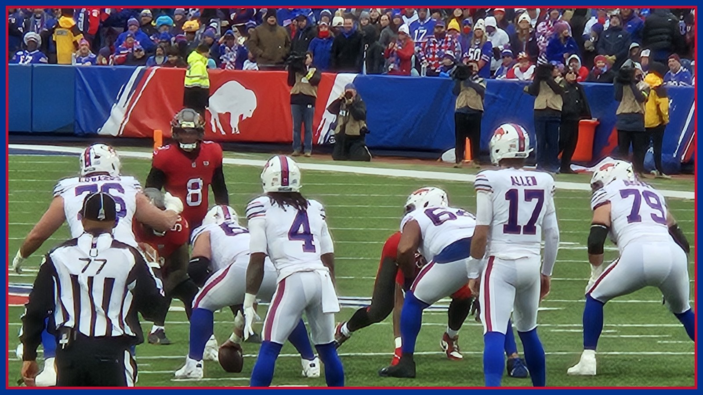

The Card: Buffalo is favored in Minnesota, but Friday's injury report is moving the real price
Buffalo is a 3.5-point road favorite at Minnesota for Monday night, per the AP preview. Then Friday's practice report landed: Dion Dawkins missed a second straight day (rib), Alec Anderson stayed out (ankle), Spencer Brown stayed limited (back) — and the Vikings got two starters back to full. The Card prices what changed.

Welcome back to The Card — I'm Matt Manzella, and this is the one desk on this site where we talk about the numbers that move money. This is Partner Content, presented by Kalshi, the regulated exchange where you trade on game outcomes instead of betting against a house. The rule here has not changed since this desk opened: every number below traces to a named source, every position gets logged in public, and there are no locks and no guarantees. Anyone selling you certainty on a Monday night game in November is selling you a feeling. The Card sells homework — and this week's homework changed on Friday afternoon.
Start with the headline price. Buffalo (6-1) visits Minnesota (6-1) on Monday night, Nov. 9 at 8:15 PM ET on ESPN at U.S. Bank Stadium, and the Associated Press preview has the Bills as a 3.5-point road favorite. On paper, that price is easy to defend: per the same AP preview, Buffalo has scored 30 or more points in three straight games and five of seven, and James Cook arrives with 707 rushing yards, fifth in the league. The market is pricing the No. 1 offense in football. What the market cannot fully price yet — because the Bills themselves do not know it yet — is who is blocking for that offense.
Here is what Friday did to the left side of Buffalo's line. Per Buffalo Rumblings' Friday injury report, left tackle Dion Dawkins missed a second straight practice with the rib injury he says he suffered in the first quarter of last Sunday's win over Baltimore; Dawkins told reporters he plans to be ready to go Monday night, but a plan is not a practice rep. Left guard Alec Anderson also missed a second straight day with an ankle injury after being seen in a boot following the Ravens game, and Rumblings' assessment was blunt: Anderson likely misses Monday, leaving Tylan Grable or Austin Corbett to fill the spot. Right tackle Spencer Brown, who missed the Baltimore game with a back injury, was limited for a second straight day; Rumblings expects a questionable tag when final designations land Saturday, with an expectation he suits up — an expectation, not a designation, and this desk will not trade it as one. Three starters, three question marks, forty-eight hours before Brian Flores.
And Flores is the worst possible opponent for a patched line, because his defense is not a pass rusher — it is a weather system. Per the Democrat and Chronicle's Saturday matchup breakdown, Minnesota owns the NFL's No. 1 scoring defense at 13.3 points allowed per game; its 93 points allowed through seven games are the franchise's fewest at this point since 1986, and its 10 fourth-quarter points allowed are the fewest in the league through seven games since the 2019 Patriots allowed seven. The Vikings blitz on 71% of plays, per the same breakdown — the next closest team, Carolina, sits at 42.6% — and in the last two weeks Flores blitzed Indianapolis' Daniel Jones on 85.2% of his dropbacks and Detroit's Jared Goff on 79.3%, per Sumer Sports charting cited by the Democrat and Chronicle. Minnesota ranks No. 1 in both sack percentage (10.5%) and pressure rate (45.8%). That is the defense a backup left side would be walking into, in the loudest dome in football.
Now the other side of the ledger, because The Card does not do one-sided math. Josh Allen has been blitzed on 33.2% of his dropbacks this season and has made teams pay for it, per the Democrat and Chronicle: 66.7% completions at 8.6 yards per attempt with three touchdowns against the blitz, plus 204 scramble yards — fourth-most in the league — including a league-best 11 quarterback runs of 10 or more yards. A blitz that misses Allen does not just fail; it donates a first down. And Cook is the pressure release the whole plan runs through: per Buffalo Rumblings' five Bills to watch, the one soft number on Minnesota's defensive sheet is 4.5 yards allowed per carry. Every efficient Cook run is a Flores blitz that never gets called and a third-and-manageable instead of a third-and-9 in a shaking dome. Friday also brought Buffalo one genuine piece of good news the headline price may not have caught: tight end Dalton Kincaid was upgraded to a full participant, per Rumblings, after a week limited by a chest injury. Khalil Shakir's Friday absence was personal, not medical, per the same report. And Minnesota's own report moved the wrong way in the backfield — running back Demond Claiborne was downgraded to did-not-practice with a knee injury — even as the Vikings got left tackle Christian Darrisaw and cornerback Isaiah Rodgers back to full practice, per Rumblings and the Daily Norseman.
The Minnesota quarterback situation, at least, is settled, and it matters to the total picture: Carson Wentz starts Monday night with Kyler Murray out with a hamstring strain and considered week-to-week, per Reuters. Wentz is a pocket passer without Murray's escape hatch, facing a Buffalo defense that just played its best game of the season — but a veteran pocket passer feeding Justin Jefferson on time is exactly how a frustrated superstar stops slumping, and this site's Culture Desk already told that story this week. Price the quarterback who is actually playing: a stationary target for Jim Leonhard's blitz, and a live risk to Christian Benford on the other end of it.
So here is my card for Monday night, in order. One: the Cook angle — Buffalo's run game is the tax on Flores' blitz rate, and 4.5 yards a carry allowed is the number I trust most on either sheet; if Buffalo controls this game, it controls it on the ground first. Two: patience on the game itself until Saturday's final designations — if Dawkins is cleared and Brown carries only a questionable tag, Buffalo's price makes sense; if Dawkins is out and the left side is two backups deep, the honest position is no position until the live market overreacts to Minnesota's first blitz that gets home. Three: Buffalo to win is still my lean — Allen's anti-blitz numbers are real, and this offense has hit 30 in three straight — but it is a lean that lives and dies with the Saturday report, and I will check the live price on Kalshi before trading anything, because the number moves with every injury headline out of Orchard Park.
The Card is Partner Content presented by Kalshi. Trade this game and every game at kalshi.com/r/BNC — free $55 when you trade $25, code BNC. You must be 18 or older to trade on Kalshi. Prices move, nothing in this column is a guarantee, and this is analysis and entertainment, not financial advice. Trade only what you can afford to lose. Final designations land Saturday and Monday's inactives, about 90 minutes before kickoff, are the last word — trade the designation, not the rumor. Go Bills — and get every injury update and the full Monday night fallout in your inbox every morning with The BNC Blitz.
The BNC Blitz is free: the day's Bills news, one stat that matters, and one take, every morning. Join to keep reading — and never miss the end of a story again.